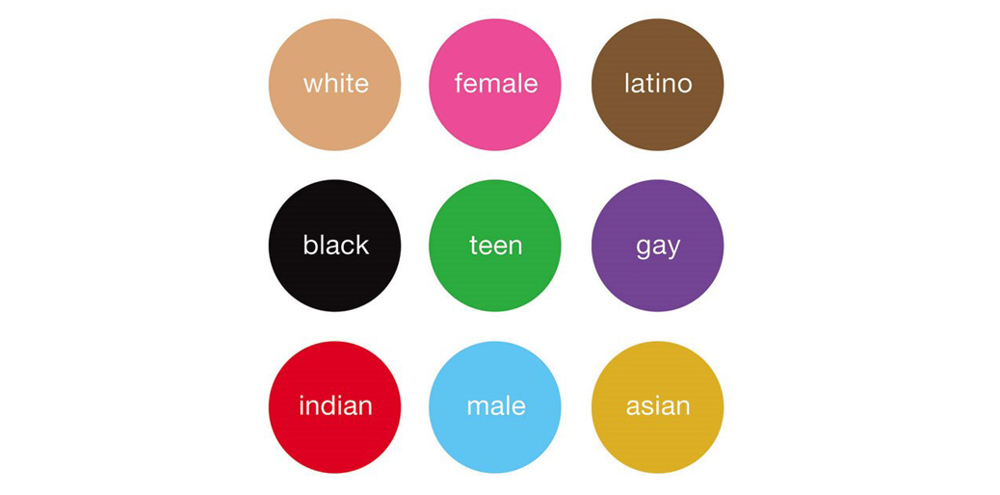

The theory of stereotype threat describes the possibility of (often unconsciously) experiencing anxiety that can lead to negative outcomes, when in situations where we believe we may confirm a stereotype about the groups we identify with. While it’s a common held belief today and well studied, it was first introduced in 1995 in the experiments conducted by Psychologists Dr. Claude Steele together with Dr. Joshua Aronson.

In short, their experiments examined the role of race in test scores of African-American college students compared to European-American students. They found, that when race was emphasized, the African-American students performed poorly. However, when race was deemphasized, the African-American students performed better or equal to their European-American counterparts. Many studies have been done since, replicating their findings as well as examining the performances of other groups including those based on race, sex, age, religion, sexual orientation and even socioeconomic and political affiliations.
As I discussed last week, there’s a diversity problem in tech. What role if any could stereotype threat play in that problem? When looked through a gender filter, perhaps it can began to explain why so few women work in tech or even pursue a STEM based education. The same could be said when looking through a race filter in examining low percentages of African-Americans and Hispanics in the technology sector.
I’m a relative newcomer to tech and just now beginning to explore an education and eventually a career path in that direction. Apart from being aware of the diversity problem in tech, I can’t say I have personally experienced it. That’s not to say I haven’t experienced stereotype threat elsewhere. As a gay man, I’ve experienced it. Not so much in academic settings but in professional and other social settings. I can remember presenting my work to colleagues and being hyper-aware of my sexuality and not wanting to align with stereotypes or being perceived as too feminine or too “gay.” I can remember having those same feelings even just walking down the street.
Societal norms have shifted a great deal in the last couple of decades, especially concerning the LGBT communities. Passing as straight, fitting in or aligning with traditional gender roles isn’t as big of an issue as it once was. The gains in overcoming stereotype threat have come from not only awareness but also visibility. That, I believe can be a tool in minimizing the threat in other areas as well. We can more easily refute the threat and overcome the anxiety when we can see and identify with a trans* actor on television or the female CEO transforming the tech industry or an African-American excelling in education going on to become President.
Learn More
If you’d like to explore this topic more, there’s a wealth of information online including more studies, other remedies, and even counter-arguments. To start, consider the following resources.
- ReducingStereotypeThreat.org - What is stereotype threat?
- DiversityInc - The Stereotype Threat to Workplace Diversity: Dr. Claude Steele Mesmerizes Audience
- Wikipedia - Stereotype Threat
Being aware of stereotype threat or at least being aware of the impact the groups we identify with can have on our outcomes is a worthy pursuit. It can help us when we’re in homogeneous situations and more importantly, when we’re not.